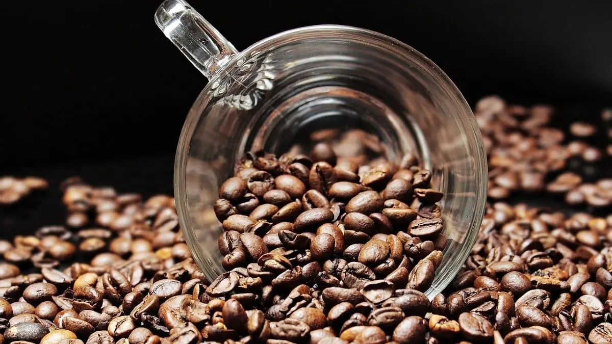
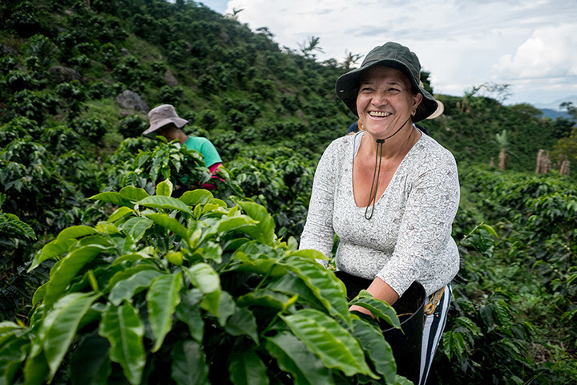
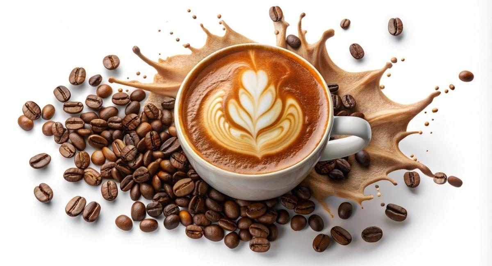

En El grano perfecto, vivimos y respiramos café colombiano. Somos un equipo apasionado por llevar a tu mesa el auténtico sabor de nuestra tierra, compartiendo historias que nacen en las montañas, entre cafetales bañados por el sol y cultivados con dedicación por manos expertas.
Nuestro compromiso es con la calidad y la sostenibilidad. Trabajamos directamente con caficultores locales, asegurándonos de que cada grano cuente con el sello de excelencia que ha hecho famoso al café colombiano en el mundo. Creemos en el comercio justo, en preservar las tradiciones y en construir un futuro próspero para quienes dedican su vida a este maravilloso producto.
Aquí no solo encontrarás café, sino una experiencia que conecta culturas, paisajes y aromas únicos. Queremos que cada sorbo sea un homenaje a Colombia, su gente y su riqueza natural.
Gracias por ser parte de esta historia que comienza en la tierra y termina en tu taza.